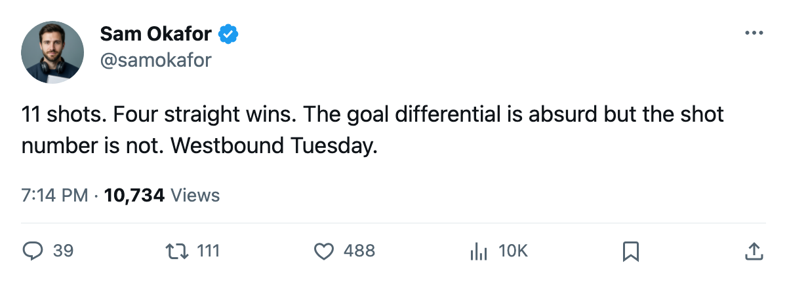

TOR
TORLeafs 3, Canucks 1: 11 shots, a 4-game streak, and 3 on the road starting Tuesday
Toronto won for the 4th straight time while firing the puck at an opposing net 11 times. The Western swing that follows will test whether that is enough.
 Sam OkaforLeafs beat reporter · Queen City Telegram
Sam OkaforLeafs beat reporter · Queen City Telegram
The piece
Toronto beat  Vancouver Canucks 3-1 on Monday night at home, its 4th straight win, while putting just 11 shots on goal. Vancouver Canucks had 29.
Vancouver Canucks 3-1 on Monday night at home, its 4th straight win, while putting just 11 shots on goal. Vancouver Canucks had 29.
The gap is the story of the night. Toronto is 48-12-4 with 110 points and a 328-166 goal differential after 69 games, the best record in the league. A Canucks team on a 4-game losing streak, missing  Trevor Linden80 (groin),
Trevor Linden80 (groin),  Petr Cajanek74 (foot), and
Petr Cajanek74 (foot), and  Bryan Allen74 (hand), shot 18 more times than the home side and still lost by two. That will not repeat in April.
Bryan Allen74 (hand), shot 18 more times than the home side and still lost by two. That will not repeat in April.
3 games, 3 rinks, 9 days
The Maple Leafs fly west Tuesday and play 3 consecutive road games before returning home on March 18.
 Edmonton Oilers hosts them first. Edmonton is 28-20-8, 88 points, and fell 3-2 at
Edmonton Oilers hosts them first. Edmonton is 28-20-8, 88 points, and fell 3-2 at  Mighty Ducks of Anaheim on Sunday.
Mighty Ducks of Anaheim on Sunday.  Ales Hemsky75, the 77-overall right wing, is out with a neck injury and is not expected back until March 13, which keeps him out of Tuesday's lineup. Toronto leads the season series against Edmonton 1-0-0 with one overtime win and an 8-3 goal margin.
Ales Hemsky75, the 77-overall right wing, is out with a neck injury and is not expected back until March 13, which keeps him out of Tuesday's lineup. Toronto leads the season series against Edmonton 1-0-0 with one overtime win and an 8-3 goal margin.
 Calgary Flames comes next on Thursday. Calgary is 22-37-6, 54 points, and 10-22 at home.
Calgary Flames comes next on Thursday. Calgary is 22-37-6, 54 points, and 10-22 at home.  Sami Salo73 meets his old club for the first time since leaving Toronto on March 4.
Sami Salo73 meets his old club for the first time since leaving Toronto on March 4.
The trip ends Saturday at Vancouver Canucks. The Canucks are 24-9 at home despite the 4-game slide, so the game that follows Monday's 11-shot performance is not the soft landing the streak suggests.
| Date | Opponent | Away | Opponent home record |
|---|---|---|---|
| 2005-03-10 | Edmonton Oilers | True | 20-12 |
| 2005-03-13 | Calgary Flames | True | 10-22 |
| 2005-03-15 | Vancouver Canucks | True | 24-9 |
Goalie note
Ed Belfour is the starter, listed in the G1 slot and dressed for every game since the shuffle took hold.  Roberto Luongo95 carries 42 games on the season and is not dressed. Mikael Tellqvist73 is the backup.
Roberto Luongo95 carries 42 games on the season and is not dressed. Mikael Tellqvist73 is the backup.
The trade deadline falls March 19. All 3 games on this swing come before it, which means the answer on the centre behind  Mats Sundin92 will not arrive while the team is on the ice in the West. It will arrive the morning after they get home.
Mats Sundin92 will not arrive while the team is on the ice in the West. It will arrive the morning after they get home.
